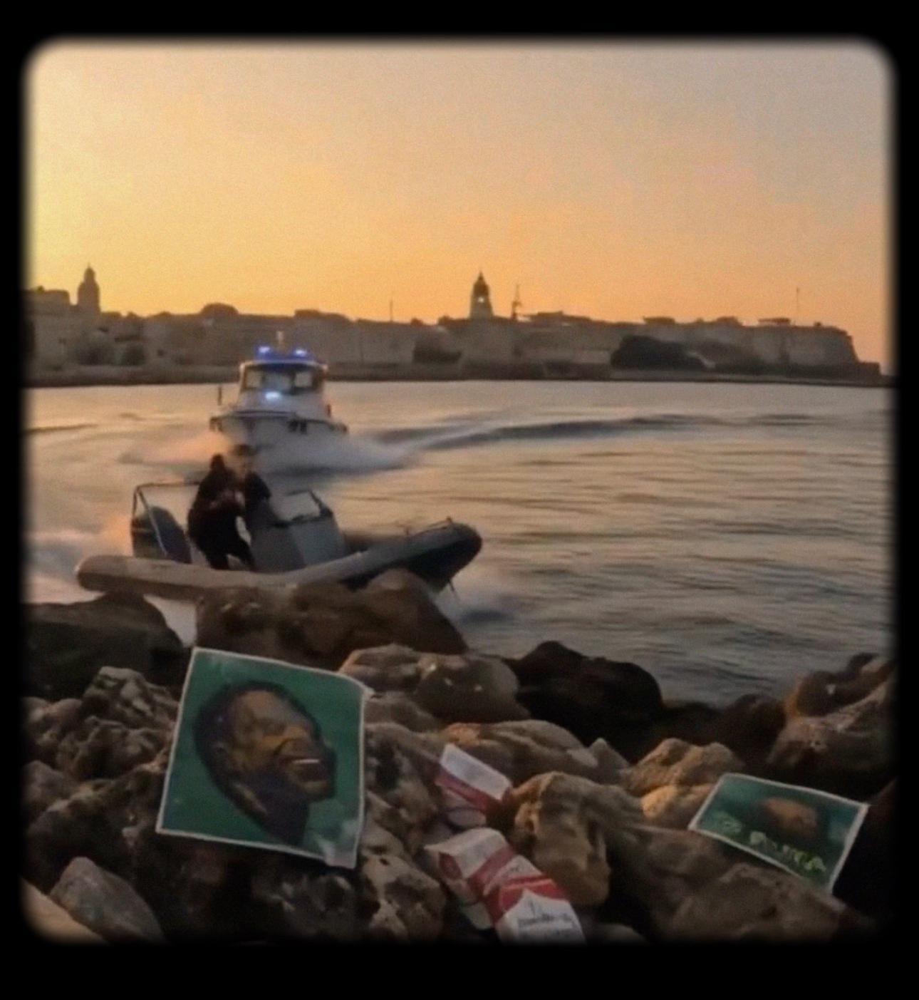

interventi registrati
Bari / maggio 2026 prima evidenza caricata
stato: aperto
stato: attivo
osservazione aperta
registrazione casuale lungomare Bari figura in corsa rilevata supporto associato: sirena / mare

attività in corso ig / nodo esterno